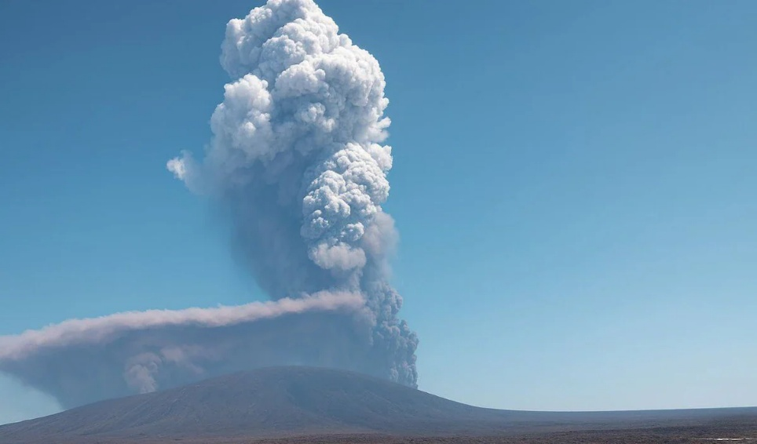

Hongkong Tai Po negyedében heves tűzvész pusztított egy lakótelepen. A tűz terjedését jól éghető, nem szabványos anyagok fokozták: szigetelő anyagok és ponyvák. A rendőrség három, az építkezéshez köthető személyt letartóztatott súlyos gondatlanság gyanújával. A halálos áldozatok száma 128, emellett 200 embert eltűntként keresnek, 70 embert ápolnak a kórházban. A tüzet először helyi idő szerint szerda délután 14:51-kor jelentették. A tűzoltóság az esetet az 5-ös skálán a legmagasabb fokozatba soroltak.
Hayli Gubbi Etiópia szunnyadó vulkánja 10 000 év után kitört, hatalmas, 10-15 kilométer magas hamuoszlopot lövellve magából, amely a Vörös-tengeren át Omán és Jemen felé sodródott. A kitörés a régió egyik legkülönlegesebb vulkáni aktivitásának számít, ugyanis a modern történelem során korábban nem volt feljegyzett kitörése.
Idén, 2025-ben már 50 éve, hogy a Microsoft hivatalosan is megkapta a nevét ami akkor még egy apró, alig ismert szoftvercég volt, mára a világ legértékesebb technológiai vállalatává nőtte ki magát. Bill Gates és Paul Allen garázsból induló vállalkozás amilyen kicsiként indult annál nagyobb lett. A sorsfordító IBM-megállapodása, a Windows felemelkedése és a Microsoft fél évszázados hatása átformálta a digitális világot.
Készítette: Szalai Dávid és csapata